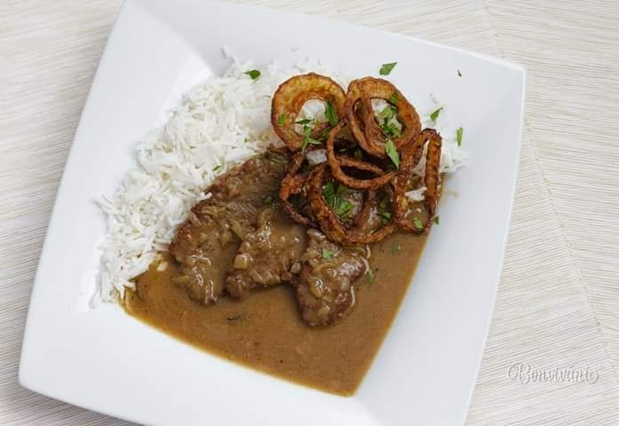

Viedenská roštenka podľa @bonvivani — Normy Jedál
Viedenská roštenka je vynikajúcou minútkou. Hovädziu roštenku dusíme do mäkka na cibuľke, podávame s ryžou, fantastickou prírodnou šťavou a hlavne s fritovanou cibuľkou. Tej sa nebráňte urobiť viac. Ak ju aj nezjete všetku k viedenskej roštenke, dá sa použiť ako prísada do chleba či rožkov :) https://bonvivani.sk/recepty/viedenska-rostenka
#viedenskarostenka #maso #minutky #cibula #foodbloger #foodphoto #foodphotograhy